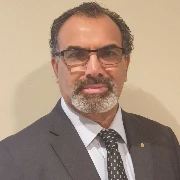
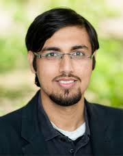
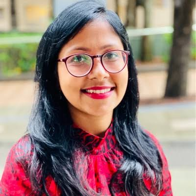
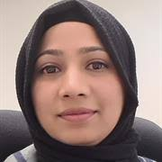
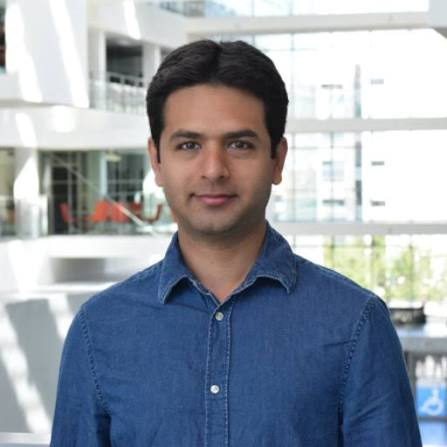
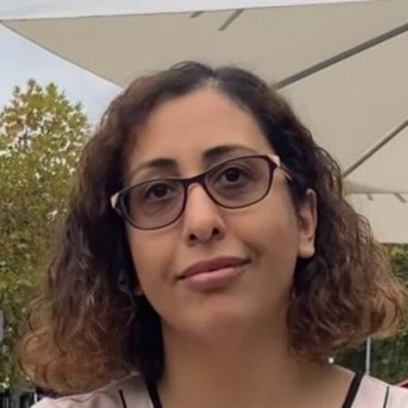

⚛
Quantum foundations
Build an understanding of quantum principles, algorithms and technologies.
Discover quantum computing through expert-led sessions, practical learning and connections across academia and industry.
The Quantum Computing Summer School brings together students, researchers and industry professionals for an engaging introduction to quantum computing and its emerging applications. The school aims to combine foundational concepts, expert perspectives and hands-on learning in a collaborative environment.
Build an understanding of quantum principles, algorithms and technologies.
Explore quantum programming concepts through interactive activities and workshops.
Meet peers, academics and professionals working in the quantum ecosystem.
The school is intended for undergraduate and postgraduate students, early-career researchers, academics and industry professionals interested in quantum computing. Detailed prerequisites will be confirmed with the program.
The detailed schedule and session topics are being developed. Please check back for confirmed sessions and workshop details.
Our speaker lineup will be announced soon.
Affiliation to be confirmed
Affiliation to be confirmed
Affiliation to be confirmed
Affiliation to be confirmed
The Quantum School will be held at RMIT University, Melbourne City Campus, in the heart of Melbourne, Australia.
Location:
Building 80 (Swanston Academic Building)
445 Swanston Street
Melbourne VIC 3000, Australia
Building 80 is conveniently located in Melbourne's CBD and is easily accessible by public transport.
By tram: Multiple tram routes operate along Swanston Street, with stops close to the venue.
By train: Melbourne Central Station is within walking distance.

RMIT University

Monash University
RMIT University

CSIRO

RMIT University

RMIT University

RMIT University
Registration dates, ticket categories and fees will be announced soon.